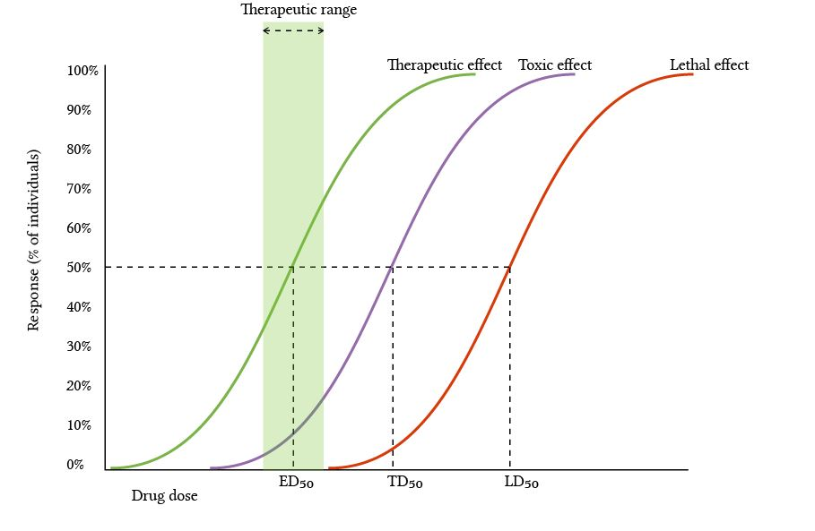
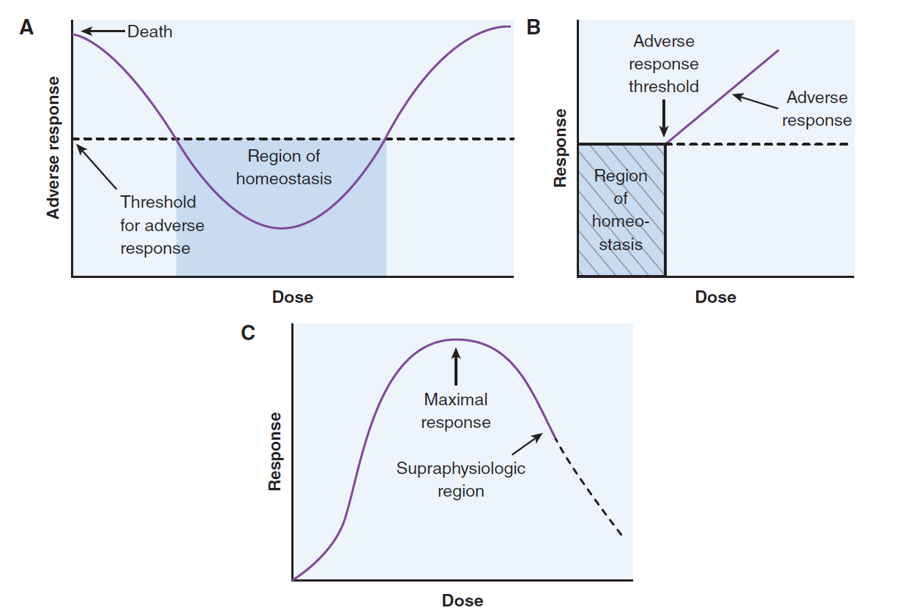
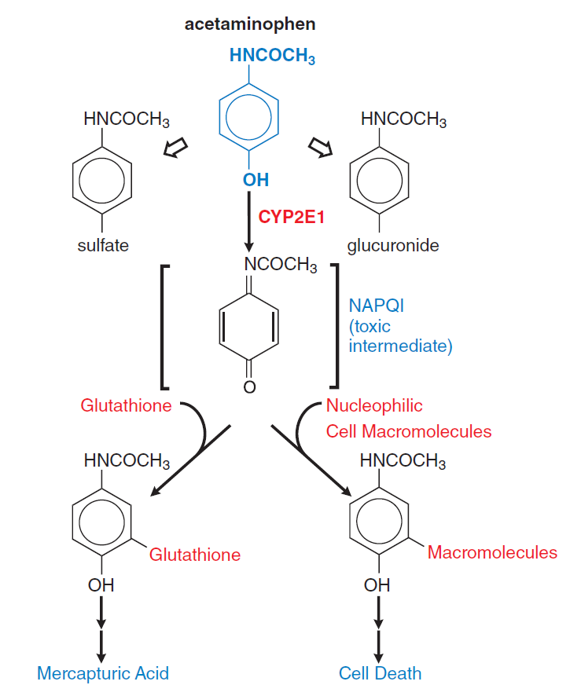

dose response¶
conventional dose response curves¶
graded dose response - individuals - greater magnitude of response with increased dose quantal dose response - population - percentage of population affected increases with dose - quantal - effect measured as either present or absent in individual - quantal dose response is used to determine LD-50 of a drug 
nonmonotonic drug response curves¶
curves which do not follow typical sigmoid shape 
A. U-shaped curve¶
seen for vitamins and minerals - low doses - adverse effects due to toxicity - dose increases - homeostasis, bottom of U-shaped curve - high doses - overdose toxicity
B. hockey stick shaped curve¶
toxicants like formaldehyde (metabolic by-products) for which cells have detoxifying mechanisms - very low doses - exogenous formaldehyde does not saturate detoxifying mechanisms - dose increases - endogenous protective mechanisms are overwhelmed causing toxic response
C. inverted U-shaped curve¶
- receptor downregulation/desensitization following ligand exposure
- additional/distinctive negative effect at concentration beyond therapeutic effect
- seen in supraphysiologic estrogen levels (receptor downregulation)
toxicokinetics¶
pharmacokinetics of a drug under circumstances that produce toxicity or excessive exposure
dose dependent reactions¶
1. pharmacological toxicity¶
related to expected or intended effects of drug on the body - CNS depression by barbiturates (anxiolysis -> sedation -> somnolence -> coma) - degree of hypotension by nifedipine - Tardive dyskinesia - extrapyramidal motor disorder associated with antipsychotic medication - phototoxicity (sunlight exposure) at correct dose - tetracycline, sulfonamides, chlorpromazine, nalidixic acid
2. pathological toxicity¶
related to harmful effects of drug on tissues in body - acetaminophen - metabolized to non-toxic (glucuronide, sulfate) conjugates and highly reactive NAPQI (via CYP isoforms) - NAPQI binds glutathione at normal dosage - at high doses, glutathione depletion leads to hepatic necrosis - shunting of NAPQI towards interactions with nucleophilic cellular macromolecules 
3. genotoxic toxicity¶
- cancer chemotherapeutic agents
allergic reactions¶
1. type I - anaphylactic reactions¶
mediated by IgE antibodies - Fc portion of IgE binds mast cells/basophils - Fab binds antigen -> mediator release (histamine, leukotrienes, prostaglandins) - main targets - GIT - food allergy - skin - urticaria - atopic dermatitis - respiratory tract - asthma - rhinitis - vasculature - anaphylactic shock
2. type II - cytolytic reactions¶
mediated by IgG and IgM antibodies, attributed to their capacity to activate the complement system - major target are cells in circulatory system - penicillin induced hemolytic anemia - quinidine induced thrombocytopenic purpura - sulfonamide induced granulocytopenia
3. type III - arthus reactions¶
mediated predominantly by IgG, generation of antigen-antibody complexes which fix complement - complexes deposited in vascular endothelium -> destructive inflammatory response -> serum sickness - urticarial skin eruptions - arthralgia/arthritis - lymphadenopathy - fever
4. type IV - delayed hypersensitivity reactions¶
mediated by sensitized T lymphocytes and macrophages - contact dermatitis due to poison ivy
drug-drug interaction¶
1. interaction of absorption¶
a drug may cause either increase or decrease in absorption of another drug - ranitidine - H2 antagonist -> increase GIT pH -> enhances basic drug absorption (triazolam) - cholestyramine - bile acid sequestrant -> decreases serum concentration of propranolol
2. interaction of protein binding¶
- highly protein bound drugs - aspirin, barbiturates, phenytoin, sulfonamides, valproic acid, warfarin
- enhanced toxicity
- protein binding sites become saturated (hypoalbuminemia)
- displaced from plasma protein by other drugs
3. interaction of metabolism¶
especially seen when hepatic CYPs are involved - ethanol induced CYP2E1 - acetaminophen metabolized to NAPQI by CYP2E1 (#2. pathological toxicity)
4. interaction of receptor binding¶
- buprenorphine - opioid with partial agonist and antagonist activity
- binds to opiate receptors with high affinity -> prevents euphoria from narcotic abuse
- used to treat opioid addiction
idiosyncratic reactions¶
abnormal reactivity to a chemical that is peculiar to a given individual